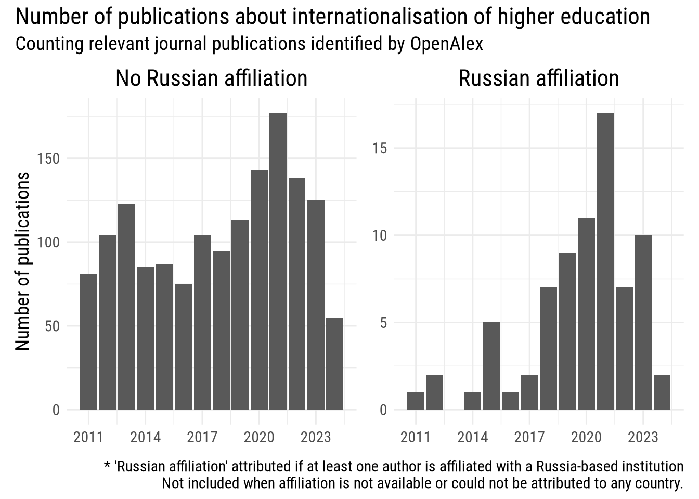

Update log:
This research note relies on OpenAlex to address the same question previously explored based on Scopus.
See the previous note in a web-version or as a pdf stored on Zenodo with a stable DOI (10.5281/zenodo.14791245).
Outline trends in the publication record of Russia-affiliated scholars writing about internationalisation of higher education.
OpenAlex automatically associates each publication to one or more concepts. Luckily, among the 65 073 concepts included in OpenAlex as of this writing, there is one which perfectly aligns with the objectives of this research note:
Concepts are attributed to articles based on title, abstract, as well as the publication venue. For more details, see the official documentation.
OpenAlex includes a total of 3 524 works about “Internationalization of Higher Education”:
| type | n | |
|---|---|---|
| article | 2913 | |
| book | 53 | |
| book-chapter | 453 | |
| dissertation | 34 | |
| editorial | 3 | |
| letter | 1 | |
| other | 7 | |
| paratext | 3 | |
| preprint | 24 | |
| reference-entry | 2 | |
| report | 3 | |
| retraction | 1 | |
| review | 27 | |
| total | — | 3524 |
For consistency with the previous, Scopus-based analysis, we will focus exclusively on journal articles published between 2011 and 2024. This reduces the number of publications object of analysis to 2 205.
| Publication year | No Russian affiliation | Russian affiliation | Affiliation not available | Total | Russian affiliation share | |
|---|---|---|---|---|---|---|
| 2011 | 81 | 1 | 25 | 107 | 0.06% | |
| 2012 | 104 | 2 | 24 | 130 | 0.13% | |
| 2013 | 123 | 0 | 45 | 168 | 0.00% | |
| 2014 | 85 | 1 | 48 | 134 | 0.06% | |
| 2015 | 87 | 5 | 58 | 150 | 0.32% | |
| 2016 | 75 | 1 | 42 | 118 | 0.06% | |
| 2017 | 104 | 2 | 59 | 165 | 0.13% | |
| 2018 | 95 | 7 | 50 | 152 | 0.44% | |
| 2019 | 113 | 9 | 50 | 172 | 0.57% | |
| 2020 | 143 | 11 | 75 | 229 | 0.70% | |
| 2021 | 177 | 17 | 40 | 234 | 1.08% | |
| 2022 | 138 | 7 | 46 | 191 | 0.44% | |
| 2023 | 125 | 10 | 31 | 166 | 0.63% | |
| 2024 | 55 | 2 | 32 | 89 | 0.13% | |
| Total | — | 1505 | 75 | 625 | 2205 | — |
In brief, OpenAlex identifies 2 205 journal articles, including:
It is possible to explore this subset of publications through OpenAlex’s interactive dashboard following this link: it shows only journal articles, published between 2011 and 2024, tagged with the concept “Internationalization of Higher Education”.

Russian institutions where scholars who published about ‘internationalisation of higher education’ were affiliated with. Ordered by number of publications; click on the cited by column to order by number of times cited.
Full list of articles on OpenAlex about “internationalisation of higher education” by at least one author with a Russian affiliation.
N.B. some items, although categorised by OpenAlex as articles, do not have information about the journal where they have been published; following their DOIs, these seems to be published in conference proceedings or similar. This issue involves 6 articles in total. You can see them by ordering by journal (clicking on the journal column header) in the following table.